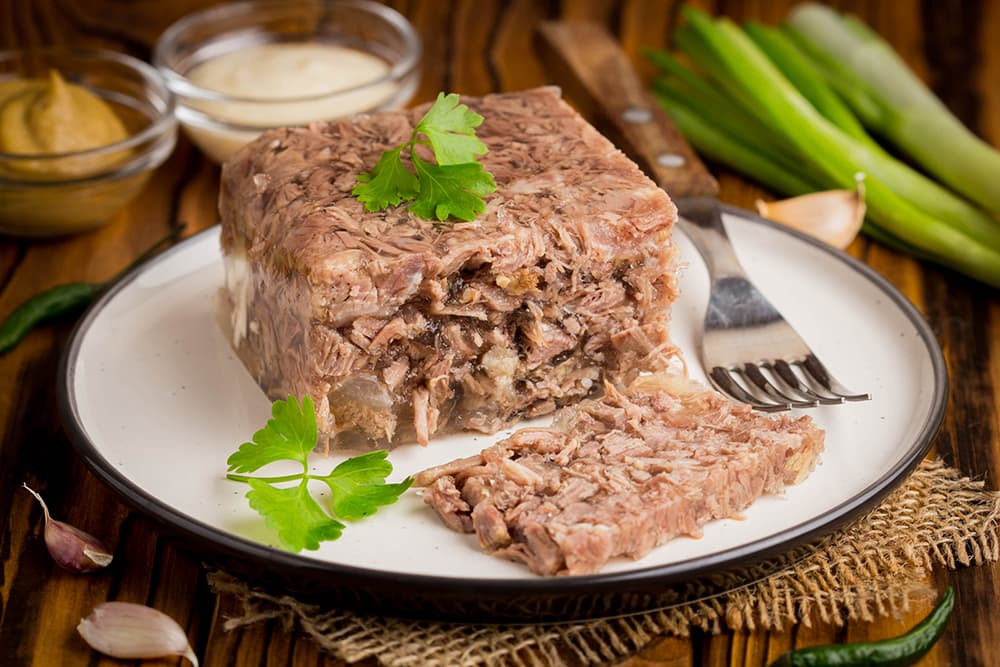

Kholodets

My husband made this aspic or holodets recipe; mostly because I wouldn’t go near pigs feat with a 10 foot pole.
That’s what Ukrainian people use to make the gelatin firm; pigs feet. I fought him hard on this recipe, but he
insisted. He secretly purchased the ingredients and I rolled my eyes when I saw them in the freezer.
He wasn’t going to let me stop him.
Ingredients
- 2 lb pork legs, soaked in cold water and refrigerated 3 hours to overnight
- 5-8 large chicken drumsticks, or any meat with the bone in
- 2 medium onions
- 1 large carrot
- 1 large carrot
- 2 bay leaves
- 5-10 peppercorns
- 2 tsp salt + more to taste
- Red horseradish/hren sause or mustard to serve
Directions
- Make sure you soak the pork legs in cold wate (3 hours to overnight -
it's also a good way to thaw the pork)
- In a large pot, add pork legs, and chicken drum sticks. Add enough water to cover all
of the meat. Set over high heat, cover and bring to a boil. As soon as it starts boiling, remove from
heat and drain off the water. Rinse the meat, refill with fresh water (enough water to cover all of the
meat, plus an extra 1/2-inch over the meat); Don't add too much water or it won't be "gelatiney" enough
later. Cover and bring to a boil again. Reduce heat to a light boil/simmer and set a timer for 5 hours.
- After cooking for 5 hours, Add 1 large carrot, 2 medium onions (both ends removed), 1 celery stick, 2
bay leaves, 5-8 peppercorns and 2 tsp salt into the pot and continue boiling on low heat 1 more hour. It
should look like a nice chicken broth. Now it's important that you do not discard the
broth and do not add more water to the pot!
- Remove the drumsticks and carrot from the broth and let them cool. Discard pork legs, onion and bay
leaves. Use a fine mesh sieve with 3 bounty paper towels over the sieve and filter the broth through the
paper towels.
You will be left with a clean broth.
- Peel and press 4 garlic cloves into the broth and do
a taste test to see if more salt is needed.
- Once the meat has cooled, use a fork to separate meat from the bones. Keep the good meat; discard the
bones. Thinly slice the carrot. You can make one big holodets in a rectangular
pyrex dish or you can make smaller serving bowls.
- Start by placing carrots on the bottom and top with some dill if you wish. Next add the meat in an even
layer and pour broth over the meat; enough to cover the meat and a little extra over the top.
Refrigerate 3 hours to overnight, or until firm. Serve with red horseradish/hren (recipe on
NatashasKitchen.com) or Russian mustard. Once it's set, set the bowl in hot water for a few seconds,
then use a slim spatula to release the gelatin from the dish. Or you can just serve it out of the dish
and save yourself a step.
Back